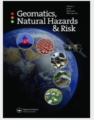
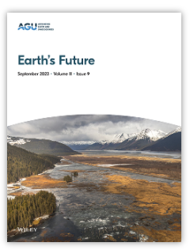

JOURNAL ARTICLE
Projected shifts in dry–wet extremes and possible associated drivers over the Hindu Kush Himalaya
Geomatics, Natural Hazards and Risk, 17(1).
[IF: 4.9]Peer-reviewed journal articles, co-authored publications, manuscripts under review and conference proceedings in climate extremes, hydroclimate, climate modelling and geospatial research.
FIRST AUTHOR

Geomatics, Natural Hazards and Risk, 17(1).
[IF: 4.9]
Earth's Future, 11, e2023EF003556.
[IF: 8.85]Sustainability, 15(5), 4668.
[IF: 3.8]Earth and Space Science, AGU, 9, e2021EA001930.
[IF: 3.68]Environmental Development and Sustainability, 23, 8643–8668.
[IF: 4.35]Spatial Information Research, 27, 627–641.
[IF: 2.1]CO-AUTHOR
International Journal of Climatology, 1–20.
[IF: 3.36]Urban Climate.
[IF: 6.64]Applied Geomatics, 9, 167–189.
[IF: 2.3]IN PROGRESS
American Meteorological Society (AMS).
Land Use Policy (Elsevier).
Climate Dynamics (Springer).
CONFERENCE CONTRIBUTIONS
AGU Fall Meeting Abstracts.
EGU General Assembly 2024, Vienna, Austria, 14–19 April 2024, EGU24-14265.
AGU Fall Meeting 2022. AGU.
AGU Fall Meeting 2022, Chicago, IL, 12–16 December 2022, abstract A46E-10.
EGU General Assembly 2022, Vienna, Austria, 23–27 May 2022, EGU22-188.
This page includes journal articles, co-authored papers, manuscripts under review and conference proceedings. The impact-factor values are reproduced from the information provided and should be checked against the relevant reporting year before formal use.